library(tidyverse)
library(readxl)
cot <- read_excel("dados/cotiledones.xlsx")Projeto final
Variável cotilédones
Análise exploratória dos dados
Importar dados
Histograma para visualizar a distribuição dos dados
cot |>
ggplot(aes(cot))+
geom_histogram(bins = 6,
color = "black", fill = "orange")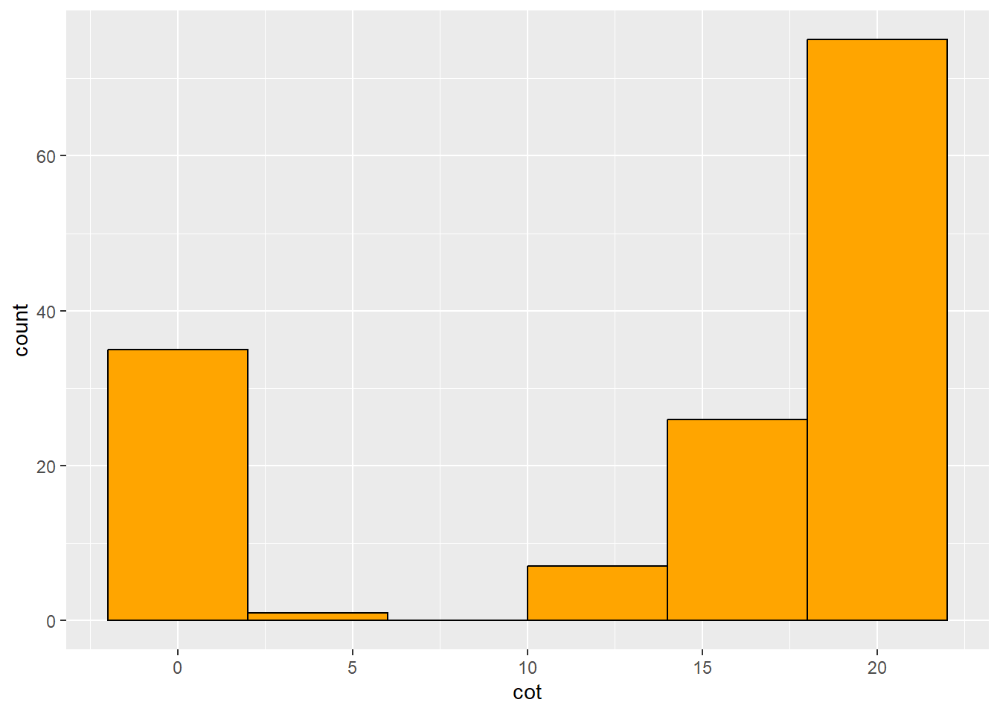
Boxplot para visualizar a distribuição do número de cotilédones por tratamento
cot |>
ggplot(aes(trat, cot)) +
geom_boxplot(width = 0.5, color = "black", fill = "gray")+
theme_classic()+
scale_y_continuous(breaks = seq(0,20,5), limits = c(0, 20))+
labs(x = "Tratamentos", y = "Número de cotilédones")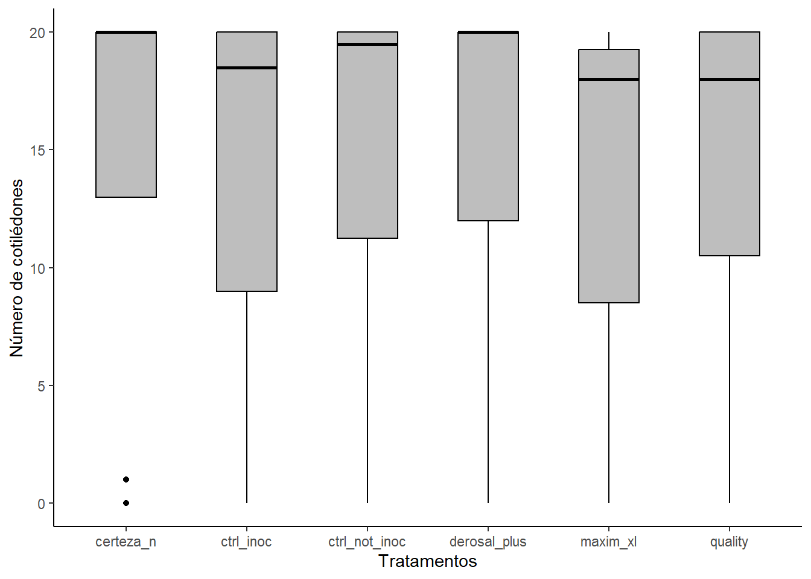
Número de cotilédones ao longo do tempo
cot2 <- cot |>
group_by(trat, dias) |>
summarize(meancot = mean(cot))
cot2 |>
ggplot(aes(dias, meancot))+
geom_line(aes(group = trat, color = trat), size=0.5)+
geom_point(aes(fill = trat), shape = 21, alpha = 0.5, size= 3)+
scale_x_continuous(breaks = seq(7,23,2), limits = c(7,21))+
labs(x = "Dias", y = "Cotilédones", title = '', color = "Tratamentos", fill = "Tratamentos")
cot2 |>
ggplot(aes(dias, meancot))+
geom_line(size=0.5, color = "black")+
geom_point( shape = 21, alpha = 0.5, size= 2)+
scale_x_continuous(breaks = seq(7,22,2), limits = c(7,21))+
labs(x = "Dias", y = "Cotilédones", title = '')+
facet_wrap(~trat)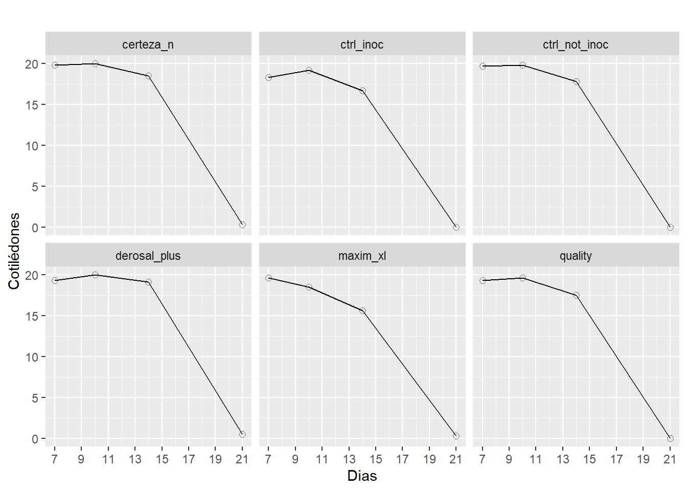
Análises estatísticas
teste = lm(cot ~ trat + dias + trat*dias + rep, data = cot)
car::Anova(teste)Anova Table (Type II tests)
Response: cot
Sum Sq Df F value Pr(>F)
trat 33.6 5 0.4820 0.7892
dias 7927.7 1 568.3329 <2e-16 ***
rep 1.7 1 0.1199 0.7297
trat:dias 3.0 5 0.0436 0.9989
Residuals 1827.3 131
---
Signif. codes: 0 '***' 0.001 '**' 0.01 '*' 0.05 '.' 0.1 ' ' 1# Resultado: os tratamentos não diferem, são iguais. Apenas o dia tem efeito. Elaborar um modelo novo. Regressão linear simples utilizando a função lm()
Tem-se uma variável quantitativa independente, dias, e uma dependente, cotilédones.
m1 =lm(cot~dias, data=cot)
summary(m1)
Call:
lm(formula = cot ~ dias, data = cot)
Residuals:
Min 1Q Median 3Q Max
-10.649 -2.841 -1.575 1.596 7.255
Coefficients:
Estimate Std. Error t value Pr(>|t|)
(Intercept) 32.5534 0.8074 40.32 <2e-16 ***
dias -1.4149 0.0576 -24.56 <2e-16 ***
---
Signif. codes: 0 '***' 0.001 '**' 0.01 '*' 0.05 '.' 0.1 ' ' 1
Residual standard error: 3.625 on 142 degrees of freedom
Multiple R-squared: 0.8095, Adjusted R-squared: 0.8082
F-statistic: 603.4 on 1 and 142 DF, p-value: < 2.2e-16# Resultado: deu efeito de dias
#O código m1 = lm(cot ~ dias, data = cot) realiza uma análise de regressão linear simples utilizando a função lm() no RStudio. Vamos detalhar o código linha por linha:m1 = lm(cot ~ dias, data = cot): Nesta linha, estamos criando um objeto chamado m1 que irá armazenar o modelo de regressão linear. A fórmula cot ~ dias especifica que estamos modelando a variável cot como uma função da variável dias. A opção data = cot indica que os dados a serem utilizados estão no conjunto de dados cot.Gráfico do modelo de regressão polinomial de segunda ordem a ser ajustado (quadrático)
#Em resumo, o código abaixo realiza a criação de um gráfico com pontos representando as médias de uma variável meancot para cada valor de dias. Além disso, ele ajusta uma linha suavizada correspondente a um modelo de regressão polinomial de segunda ordem. Modelo curvilinear.
cot3 <- cot |>
group_by(dias) |>
summarize(meancot = mean(cot))
cot3 |>
ggplot(aes(dias, meancot))+
geom_point()+
scale_x_continuous(breaks = seq(7,22,2), limits = c(7,21))+
geom_smooth(se = F, formula = y ~ poly(x, 2), method = "lm", color = "black")+
theme_minimal()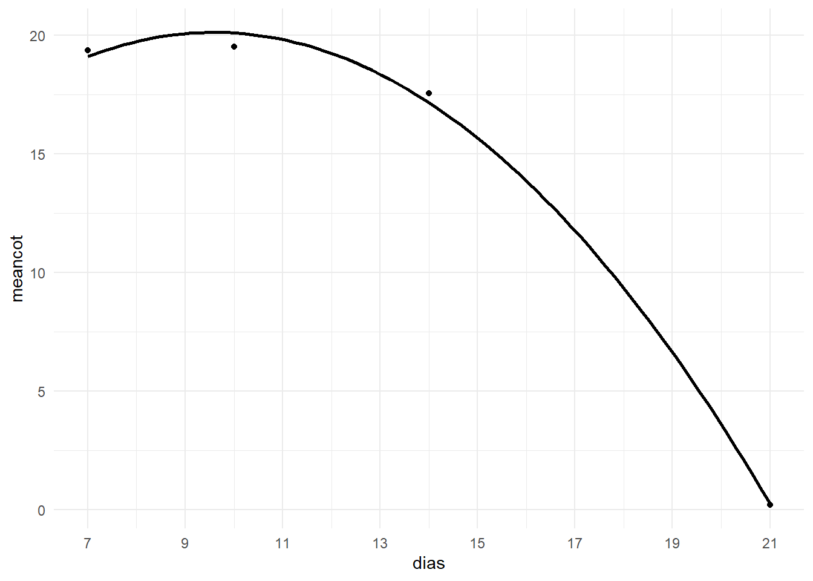
Ajustar modelo
Call:
lm(formula = cot ~ dias + dias2, data = cot)
Residuals:
Min 1Q Median 3Q Max
-7.1019 -0.2651 -0.1051 0.8981 2.8333
Coefficients:
Estimate Std. Error t value Pr(>|t|)
(Intercept) 6.070650 1.158478 5.24 5.73e-07 ***
dias 2.930634 0.182549 16.05 < 2e-16 ***
dias2 -0.152718 0.006352 -24.04 < 2e-16 ***
---
Signif. codes: 0 '***' 0.001 '**' 0.01 '*' 0.05 '.' 0.1 ' ' 1
Residual standard error: 1.611 on 141 degrees of freedom
Multiple R-squared: 0.9626, Adjusted R-squared: 0.9621
F-statistic: 1817 on 2 and 141 DF, p-value: < 2.2e-16AIC
AIC(m1, m2) df AIC
m1 3 783.5175
m2 4 550.9208# A função AIC() é usada para calcular o Critério de Informação de Akaike (AIC, Akaike Information Criterion) para um ou mais modelos. O AIC é uma medida que avalia a qualidade do ajuste de um modelo, levando em consideração a capacidade de ajuste e a complexidade do modelo. A função AIC() retorna o valor do AIC para cada modelo especificado. Quanto menor o valor do AIC, melhor é o ajuste do modelo. Portanto, você pode comparar os valores do AIC dos dois modelos para determinar qual deles possui um ajuste melhor aos dados.Colocar a equação no gráfico quadrático
cot3 <- cot |>
group_by(dias) |>
summarize(meancot = mean(cot), sd=sd(cot))
cot3 |>
ggplot(aes(dias, meancot))+
geom_point()+
scale_x_continuous(breaks = seq(7,22,2), limits = c(7,21))+
geom_smooth(se = F, formula = y ~ poly(x, 2), method = "lm", color = "black")+
theme_bw()+
annotate(geom = "text",
x = 21, y = 20,
label = "y = 6,07 + 2,93x - 0.152718x²
R² = 0.96",
hjust = 1,5)+
geom_errorbar(aes(ymin = meancot - sd,
ymax = meancot + sd),
width = 0.1)
Variável produtividade
Análise exploratória dos dados
Importar dados
prod <- read_excel("dados/produtividade.xlsx")Histograma para visualizar a distribuição dos dados
prod |>
ggplot(aes(prod))+
geom_histogram(bins = 6,
color = "black",
fill = "orange")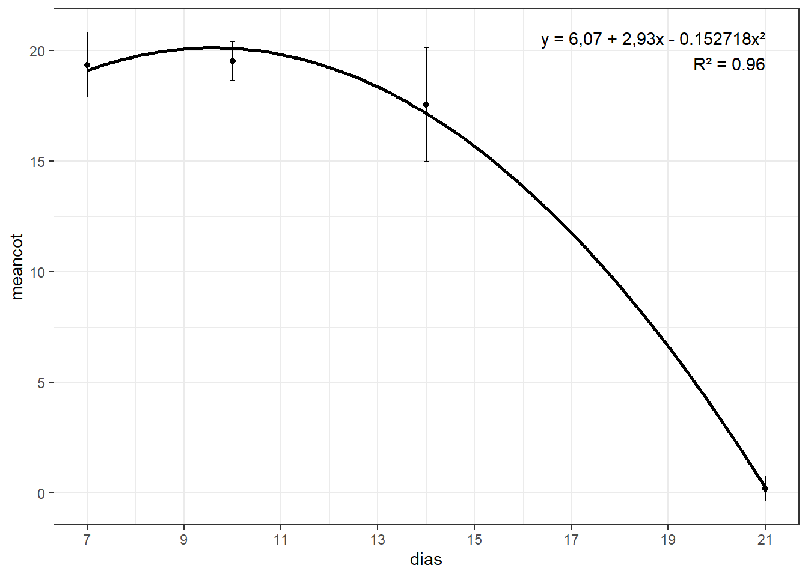
###Boxplot para visualizar a distribuição do número de cotilédones por tratamento
prod|>
ggplot(aes(trat, prod)) +
geom_boxplot()+
labs(x = "Tratamentos", y = "Produtividade (kg/ha)")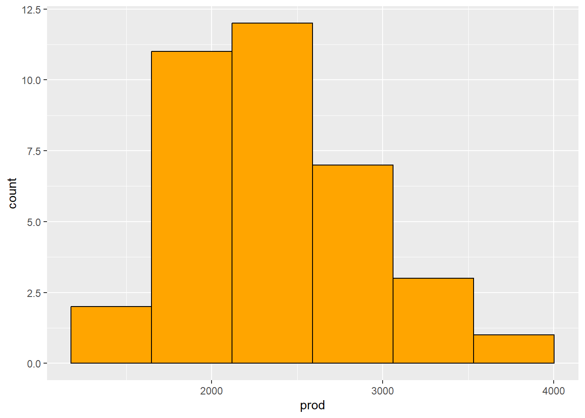
Análises estatísticas
Ajustar o modelo usando aov() DBC
aov1 <- aov(prod ~ trat + as.factor(rep), data = prod)
summary(aov1) Df Sum Sq Mean Sq F value Pr(>F)
trat 5 1474239 294848 3.11 0.0256 *
as.factor(rep) 5 6466891 1293378 13.64 1.79e-06 ***
Residuals 25 2369923 94797
---
Signif. codes: 0 '***' 0.001 '**' 0.01 '*' 0.05 '.' 0.1 ' ' 1#Resultado: há efeito de tratamento.Testar premissas da ANOVA
#Checar as premissas para verificar se o modelo está correto
library(performance)
check_heteroscedasticity(aov1)OK: Error variance appears to be homoscedastic (p = 0.563).check_normality(aov1)Warning: Non-normality of residuals detected (p = 0.018).#Resultado: dados homocedásticos mas apresentam normalidade.
library(DHARMa)
plot(simulateResiduals(aov1)) #normalidade a direita e variância homogênea a esquerda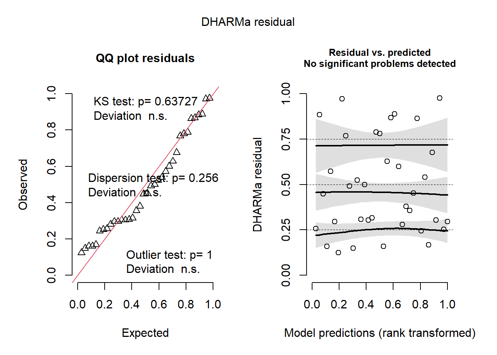
hist(aov1$residuals)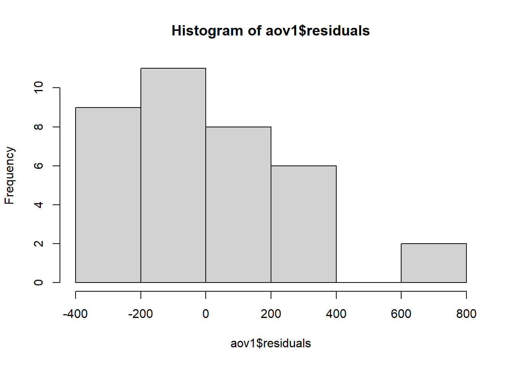
Gráfico QQ (quantile-quantile)
qqnorm(aov1$residuals)
qqline(aov1$residuals)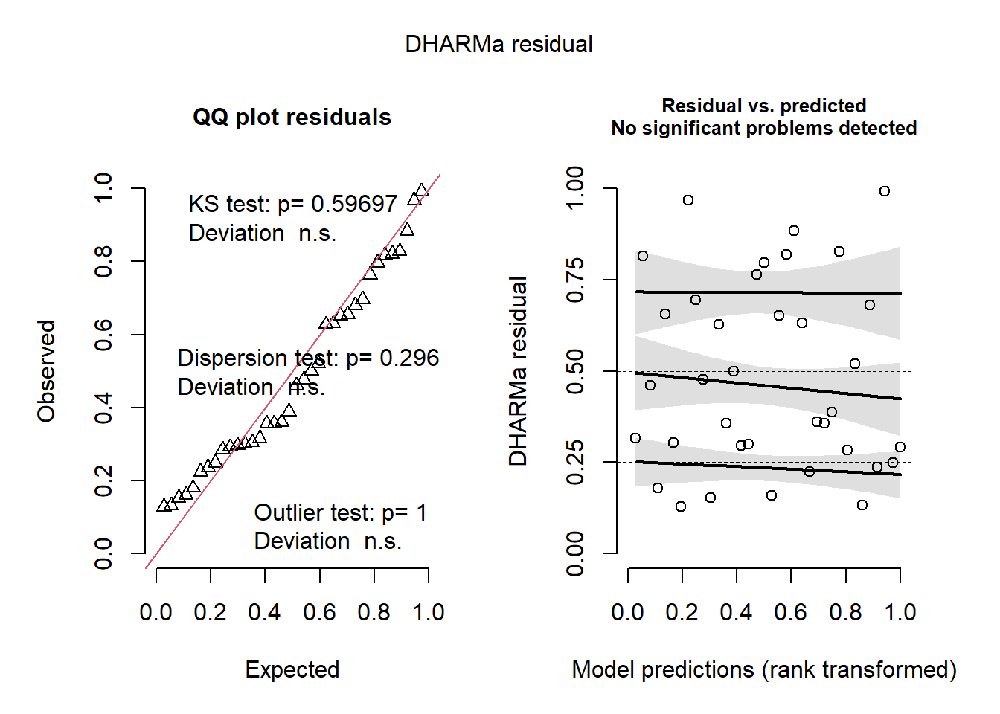
#O gráfico QQ (quantile-quantile) é uma ferramenta útil para avaliar a normalidade dos resíduos de um modelo. Se os resíduos seguirem uma distribuição normal, os pontos no gráfico devem se aproximar de uma linha reta. A linha de referência adicionada com qqline() é uma reta que representa a distribuição normal esperada.Análise de médias estimadas a partir do modelo ajustado
library(emmeans)
aov1_means <- emmeans(aov1, ~ trat)
aov1_means trat emmean SE df lower.CL upper.CL
certeza_n 2808 126 25 2549 3067
ctrl_inoc 2236 126 25 1977 2495
ctrl_not_inoc 2272 126 25 2013 2531
derosal_plus 2232 126 25 1973 2491
maxim_xl 2307 126 25 2049 2566
quality 2433 126 25 2174 2692
Results are averaged over the levels of: rep
Confidence level used: 0.95 Teste de Tukey
pwpm(aov1_means) certeza_n ctrl_inoc ctrl_not_inoc derosal_plus maxim_xl quality
certeza_n [2808] 0.0371 0.0575 0.0351 0.0875 0.3151
ctrl_inoc 571.85 [2236] 0.9999 1.0000 0.9985 0.8733
ctrl_not_inoc 536.30 -35.56 [2272] 0.9999 0.9999 0.9407
derosal_plus 576.30 4.44 40.00 [2232] 0.9980 0.8628
maxim_xl 500.74 -71.11 -35.56 -75.56 [2307] 0.9792
quality 374.81 -197.04 -161.48 -201.48 -125.93 [2433]
Row and column labels: trat
Upper triangle: P values adjust = "tukey"
Diagonal: [Estimates] (emmean)
Lower triangle: Comparisons (estimate) earlier vs. laterlibrary(multcomp)
library(multcompView)
cld(aov1_means) trat emmean SE df lower.CL upper.CL .group
derosal_plus 2232 126 25 1973 2491 1
ctrl_inoc 2236 126 25 1977 2495 1
ctrl_not_inoc 2272 126 25 2013 2531 12
maxim_xl 2307 126 25 2049 2566 12
quality 2433 126 25 2174 2692 12
certeza_n 2808 126 25 2549 3067 2
Results are averaged over the levels of: rep
Confidence level used: 0.95
P value adjustment: tukey method for comparing a family of 6 estimates
significance level used: alpha = 0.05
NOTE: If two or more means share the same grouping symbol,
then we cannot show them to be different.
But we also did not show them to be the same. Variável emergência
Análise exploratória
Importar dados
emerg <- read_excel("dados/emergencia.xlsx")Histograma para visualizar a distribuição dos dados
emerg |>
ggplot(aes(emerg))+
geom_histogram(bins = 6,
color = "black", fill = "orange")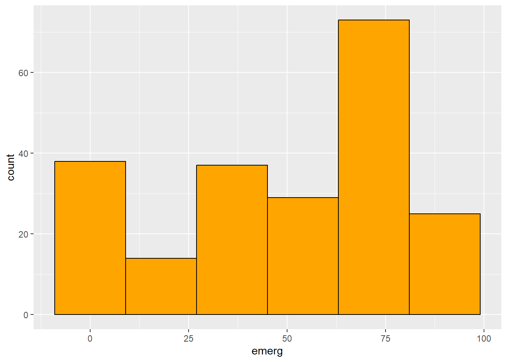
Boxplot para visualizar a distribuição do número de plantas emergidas
emerg|>
ggplot(aes(trat, emerg)) +
geom_boxplot()+
scale_y_continuous(breaks = seq(0,90,10))+
labs(x = "Tratamentos", y = "Plantas emergidas")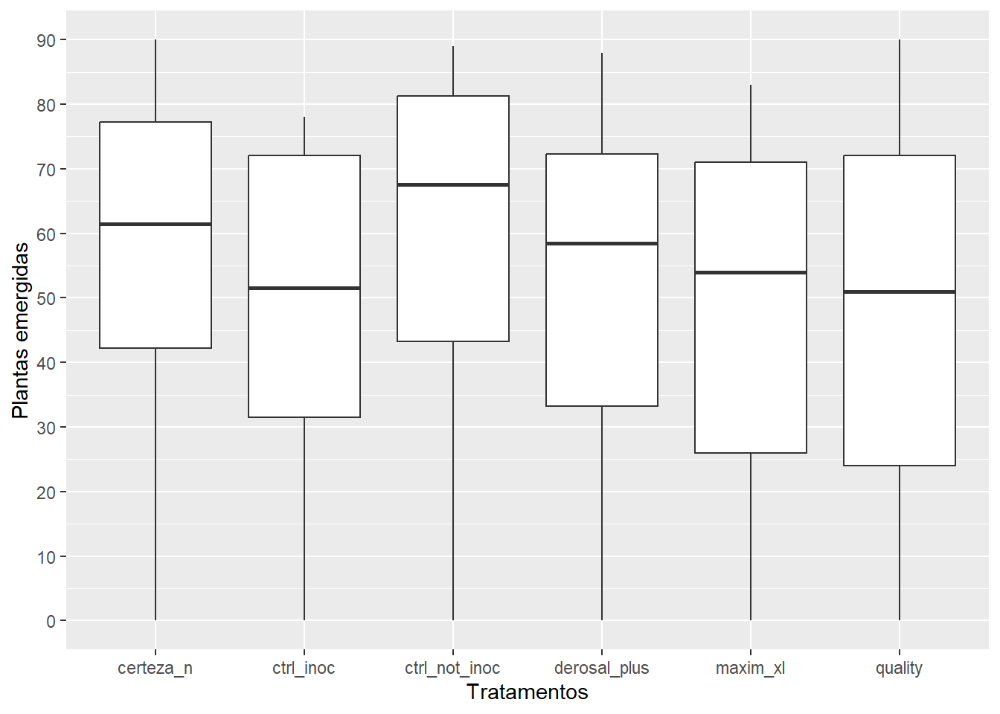
Número de plantas emergidas ao longo do tempo
emerg2 <- emerg |>
group_by(trat, dias) |>
summarize(mean_emerg = mean(emerg))
emerg2 |>
ggplot(aes(dias, mean_emerg))+
geom_line(aes(group = trat, color = trat), size=0.5)+
geom_point(aes(fill = trat), shape = 21, alpha = 0.5, size= 3)+
scale_x_continuous(breaks = seq(7,23,2), limits = c(7,21))+
labs(x = "Dias", y = "Plantas emergidas", title = '', color = "Tratamentos", fill = "Tratamentos")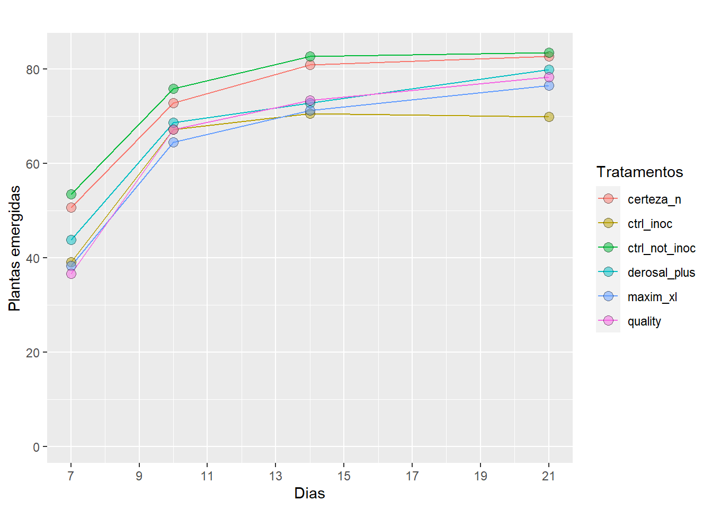
emerg2|>
ggplot(aes(dias, mean_emerg))+
geom_line(size=0.5, color = "black")+
geom_point( shape = 21, alpha = 0.5, size= 2)+
scale_x_continuous(breaks = seq(7,21,2), limits = c(7,21))+
labs(x = "Dias", y = "Plantas emergidas", title = '')+
facet_wrap(~trat)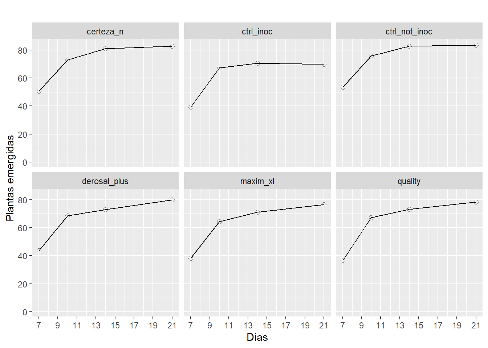
Índice de velocidade de emergência
# Função para calcular o IVE para um tratamento específico
calcular_IVE <- function(emerg, dias) {
n <- length(emerg)
IVE <- emerg[1] / dias[1]
for (i in 2:n) {
IVE <- IVE + ((emerg[i] - emerg[i-1]) / dias[i])
}
return(IVE)
}
# Cálculo do IVE para cada tratamento
resultados <- aggregate(emerg$emerg, by = list(emerg$trat), FUN = calcular_IVE, dias = emerg$dias)
# Criação do dataframe com os resultados do IVE por tratamento
resultado_final <- data.frame(trat = resultados[, 1], IVE = resultados[, 2])
print(resultado_final) trat IVE
1 certeza_n 11.080952
2 ctrl_inoc 10.528571
3 ctrl_not_inoc 11.519048
4 derosal_plus 9.052381
5 maxim_xl 11.352381
6 quality 9.838095Análise dos dados
Ajustar o modelo usando aov() DBC
teste_emerg = lm(emerg ~ trat + dias + trat*dias + factor(rep), data = emerg)
car::Anova(teste_emerg) # Resultado:significativo para tratamento e dias.Anova Table (Type II tests)
Response: emerg
Sum Sq Df F value Pr(>F)
trat 3905 5 2.4452 0.03543 *
dias 106209 1 332.5489 < 2e-16 ***
factor(rep) 650 5 0.4068 0.84377
trat:dias 268 5 0.1675 0.97427
Residuals 63556 199
---
Signif. codes: 0 '***' 0.001 '**' 0.01 '*' 0.05 '.' 0.1 ' ' 1Ajustar o modelo aov() DBC para tratamento e dias
trat_emerg = lm(emerg ~ trat + factor(rep), data = emerg)
car::Anova(trat_emerg) #Resultado: não teve efeito de tratamento.Anova Table (Type II tests)
Response: emerg
Sum Sq Df F value Pr(>F)
trat 3905 5 0.9415 0.4551
factor(rep) 650 5 0.1566 0.9778
Residuals 170033 205 dias_emerg = lm(emerg ~ dias + factor(rep), data = emerg)
car::Anova(dias_emerg) #Resultado: não teve efeito de dias.Anova Table (Type II tests)
Response: emerg
Sum Sq Df F value Pr(>F)
dias 106209 1 327.7447 <2e-16 ***
factor(rep) 650 5 0.4009 0.8479
Residuals 67729 209
---
Signif. codes: 0 '***' 0.001 '**' 0.01 '*' 0.05 '.' 0.1 ' ' 1Gráfico